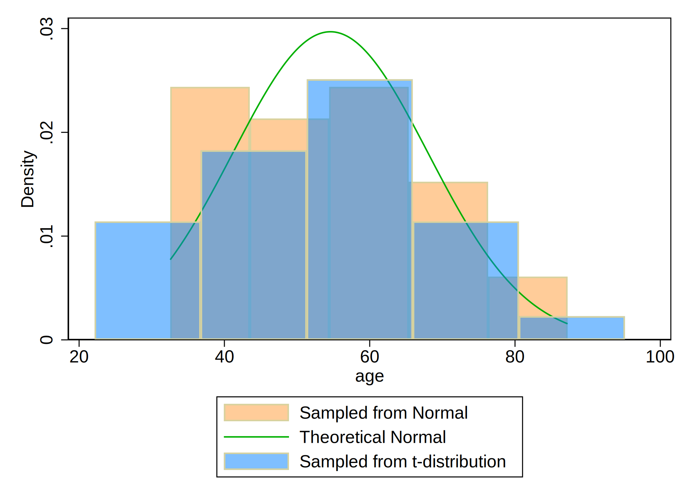

Methods: First, students initialized their dataset with 30 observations. Second, they created an age variable with a mean of 57 years and a standard deviation of 15. They alternatively simulated a t-distribution. Finally, they plotted a histogram of the age variables from both normal distribution and t-distribution.
. cls
. clear
. set obs 30
number of observations (_N) was 0, now 30
. gen age=(rnormal()*15)+57
. gen age_t=(rt(_N)*15)+57
. hist age, ///
> fcolor(orange%40) /// simulated normal
> addplot(hist age_t, fcolor(midblue%50)) /// simulated t-distributio
> n
> normal /// theoretical normal
> legend(on ///
> lab(1 "Sampled from Normal") ///
> lab(2 "Theoretical Normal") ///
> lab(3 "Sampled from t-distribution") ///
> )
(bin=5, start=32.548187, width=10.937869)
. graph export hist_age.png, replace
(note: file hist_age.png not found)
(file hist_age.png written in PNG format)

Results Students found that the shapes of the graphs are different. Then, they made do-file which will be converted to html by dyndoc. They also got used to Greek symbols in the result section like “Distributkon of $\text{Age, years} \sim \mathcal{N}(\mu=57,\sigma^{2}=225)$”